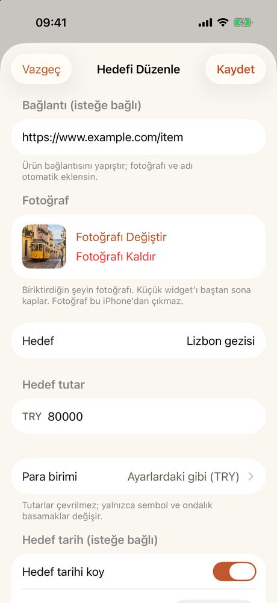
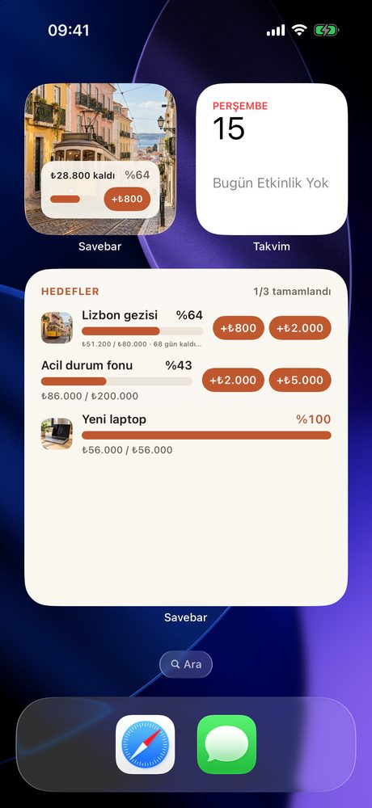

Bir şey için para biriktirmek, onu görebildiğinde daha kolay. Widget, çubuğu — ne kadar biriktirdiğini ve ne kadar kaldığını — günde defalarca baktığın yere koyar ve tek dokunuşla eklemeni sağlar.
Bunu Savebar ile şöyle kurabilirsin. Bir hedef ve Küçük widget ücretsiz.
1. Hedef oluştur
Savebar'ı aç ve şuna dokun: +.
Bir ad gir ve şunu doldur: Hedef tutar.
İsteğe bağlı: “Hedef tarihi koy” seçeneğini açarsan kalan günleri ve günde ne kadar biriktirmen gerektiğini görürsün.
İsteğe bağlı: ürün bağlantısını şuraya yapıştır: “Bağlantı”. Fotoğraf ve ad sayfadan otomatik doldurulur.
2. Widget düğmesinin tutarını seç
“Widget tutarları” altına genelde kenara koyduğun tutarı gir. Widget'ın düğmesi bu tutarı, uygulamayı açmadan tek dokunuşla ekler.

3. Widget'ı Ana Ekran'a ekle
Uygulamalar titreyene kadar Ana Ekran'da boş bir alana dokunup basılı tut.
Üst köşedeki Düzenle (veya +) düğmesine dokun, ardından şunu ara: “Savebar”.
Küçük boyutu seç ve şuna dokun: Widget Ekle.
Her para biriktirdiğinde widget'taki tutar düğmesine dokun. Çubuk ve yüzde hemen orada ilerler.

Bu resimdeki, birden fazla hedef gösteren büyük widget Savebar Pro'ya dahildir.
Daha fazlası mı?
Savebar Pro abonelik değil, tek seferlik bir satın almadır:
Sınırsız hedef
Birden fazla hedef gösteren Orta ve Büyük widget'lar ve hedef başına en fazla iki tutar düğmesi
Kilitli Ekran widget'ları
Aynı tutar düğmelerine sahip bir Apple Watch uygulaması
Sorular
Bankama bağlanıyor mu?Hayır. Tutarları kendin ekliyorsun; giriş yapmak ya da bir şey bağlamak gerekmez.
Ücretsiz kaç hedef oluşturabilirim?Bir tane, Küçük Ana Ekran widget'ıyla birlikte. Tek seferlik satın alma olan Savebar Pro; sınırsız hedef, birden fazla hedef gösteren Orta ve Büyük widget'lar, Kilitli Ekran widget'ları ve bir Apple Watch uygulaması sunar.
Düğmede olmayan bir tutar ekleyebilir miyim?Evet. Uygulamada hedefi aç ve istediğin tutarı girmek için “+ Ekle”ye dokun.
Widget'ın hangi hedefi göstereceğini nasıl seçerim?Widget'a dokunup basılı tut, Widget'ı Düzenle'ye dokun ve hedefi seç.